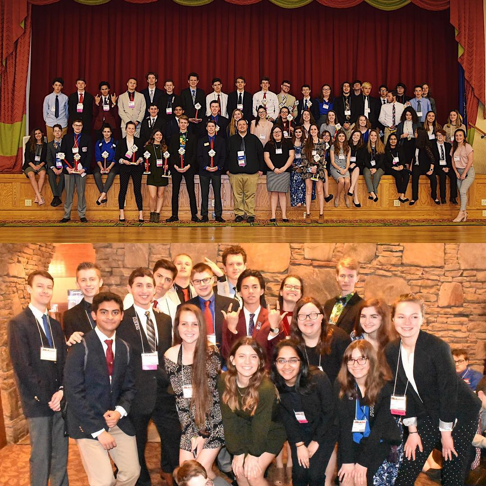
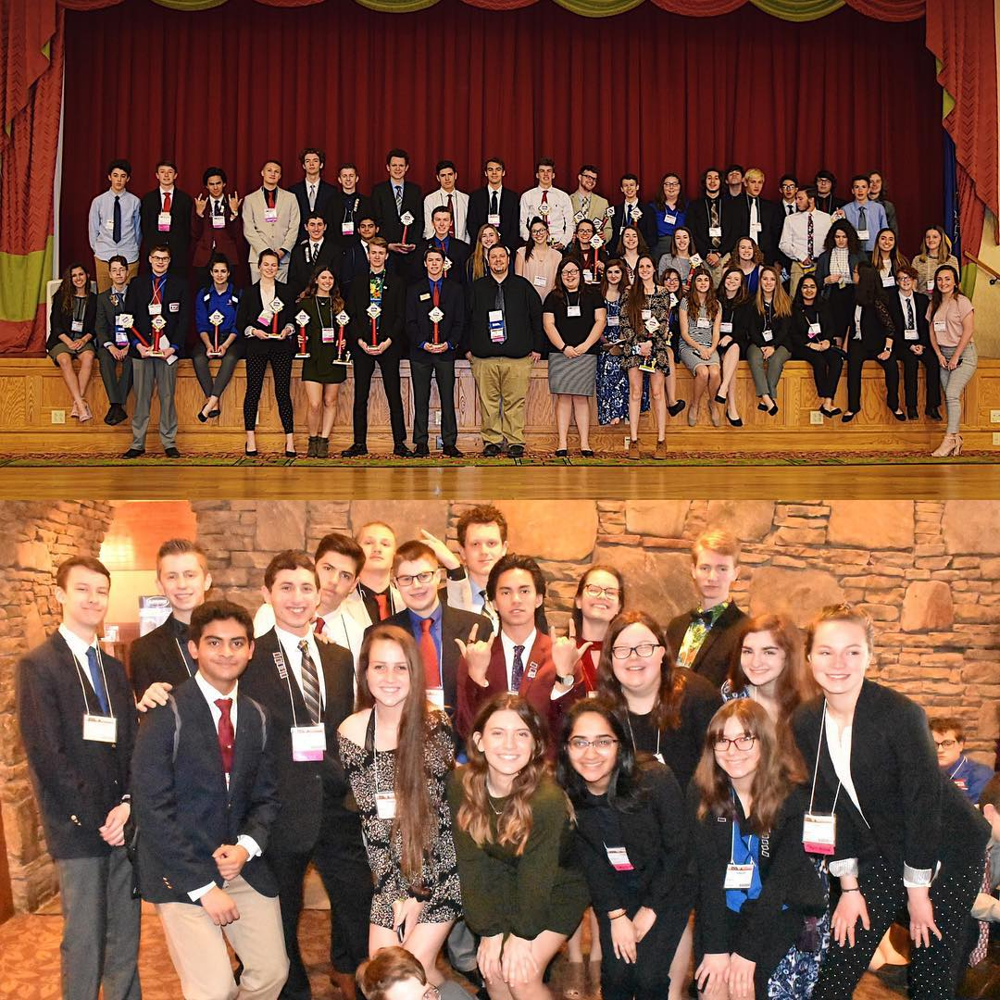

Awards
Boyertown TSA is one of the nation's highest-performing chapters in competition and was the most involved in 2019. Students and teachers at Boyertown are setting records and receiving praise at the national level for their ambitious program of work and dedication to the organization.
LEAP Legacy Chapter
The LEAP Legacy Chapter program is the competition at the national level where chapters can submit a summary of their activities throughout the year. Of the more than 250,000 student members, one chapter is awarded $1,000 and a trophy in recognition of their exceptional efforts. There are five criteria for evaluating this award as follows:
- Model the Way - Serve as role models for other chapters and students
- Encourage the Heart - Inspire passion and develop group morals
- Challenge the Process - Innovate and advance chapter functions
- Inspire a Shared Vision - Work with a common goal in mind
- Enable Others - Help others contribute to a shared vision
After submitting a hundred page portfolio and semifinalizing, BASH TSA was given the opportunity to create a display at the national conference in competition against 9 other semifinalist chapters from 9 other states. Boyertown was eventually selected as the winner of the 2019 LEAP Legacy Chapter award as the outstanding TSA chapter in the world.
ACS Donation Record
The American Cancer Society (ACS) is TSA's national service project partner. This means that fundraising for the ACS is a major part of TSA and the work of chapters. In 2019, Boyertown TSA set the record for largest single-year ACS donation in TSA history at $11,000. For this donation, the ACS representatives for the northeast came to BASH to recognize the chapter's student officer team. BASH TSA was also given special recognition at the national conference for our charity work and unprecedented donation.
 

Competitive Success
The difference in conference results between 2003 and 2019 effectively represents the scale of BASH TSA's growth. At the 2004 state conference, Boyertown captured only 5 top ten placements and 0 trophies. At the 2019 state conference, Boyertown captured 37 top ten placements and 12 trophies - the most of any chapter in attendance. At the regional level, Boyertown had only 6 placements in 2004. In 2019 Boyertown had 79 placements at the regional level - the most of any chapter by a wide margin.
Result files can be found at patsa.org
Involvement
From 2002-2004, the only activity BASH TSA held was a hoagie fundraiser which didn't raise more than $50. At that point, however, the school district paid for a third of each student's competition at the state conference. Over the past few years students no longer receive any funding from the school. The ambitious fundraising program recently put in place has grown to involve more than six major annual fundraising/charity events. The spaghetti dinner and bag bingo events bring in between $2000 and $3000 each while the charity 5k in 2019 raised more than $6000.
Read more about our activities here


Logistics
Over the past 10 years BASH TSA has set a national precedent for chapter operations. The chapter was recognized with the award for the most outstanding and involved chapter at the regional, state, and national level in 2019.
In 2003, the chapter met twice each year, worked on events outside of school, and kept records using Microsoft Word and Excel. Since 2014 the chapter holds twice-weekly open labs, where students can use the technology education rooms at the school to work on their projects during after school hours from 3-6pm. A montly logistics meeting in the LGI - run by the chapter's student officer team - is mandatory for all members. This meeting covers the chapter's upcoming events and obligations for members. To prepare its ambitious program of work, the 12-member chapter officer team meets each week. There is also the option for TSA members to join the TSA flex - a free period built into the school day where they can work on TSA projects with their teammates.
All of these work hours are made possible by the volunteer time of Joshua Pennington - TSA advisor and a teacher at BASH. For the past few years Mr. Pennington has become involved as judging coordinator for the region 9 conference. Mr. Pennington was elected and is the incoming Board of Directors President for all of Pennsylvania TSA in 2019.
Another key step in maintaining such a large and highly-functioning chapter is ChapterSweet. ChapterSweet is an online software program developed by BASH TSA alumni Joshua Famous to coordinate all chapter functions. Other chapters have since adopted this software tool. In 2019 BASH TSA sent its student officer team to the state Fall Leadership Experience to give a seminar sharing the chapter's highly effective fundraising and organizational strategies.
Read more about the chapter's achievements here